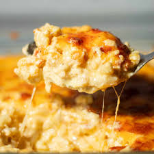

Mac and cheese

Learn how to create and digest one of the most infamous thanksgiving dishes in America!
Ingredients:
- Macaroni
- Milk
- Cheese
- Butter
- Salt
- Pepper
Step-by-step
- Boil the noodles, drain, and transfer to a prepared baking dish.
- Make the cheese sauce, pour the sauce over the noodles, and stir.
- Make the topping, spread it over macaroni and cheese, and sprinkle with paprika.
- Bake the mac and cheese until the topping is golden brown.
Home